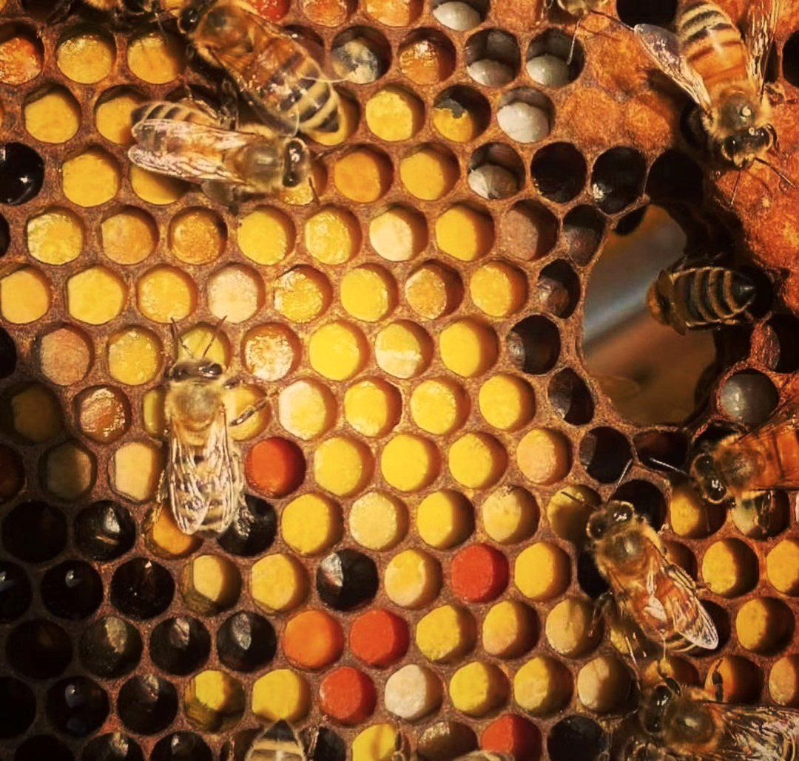

Перга — квітковий пилок, який бджоли законсервували в стільниках із ферментами й медом. Багато пасічників вважають її м’якшою для травлення формою пилку.
Склад залежить від рослин, з яких збирали пилок, тому точних цифр ми не наводимо.
Перга — поживна добавка до раціону. Бджоли переробили пилок у комірках, тому вона має кисло-солодкий смак (іноді з легкою гіркотою) і насичений медовий запах, а багато хто вважає її легшою для засвоєння, ніж сирий пилок.
Зазвичай беруть невелику кількість гранул, приблизно чайну ложку, зранку: розсмоктують або розжовують і запивають водою, а ще додають до меду чи каші. Роблять перерви. Починати варто з кількох гранул.
Перга, як і пилок, може викликати алергію. Якщо у вас алергія на пилок рослин, мед чи укуси бджіл, ви вагітні, годуєте груддю або приймаєте ліки, порадьтеся з лікарем. Дітям її без лікаря не дають.